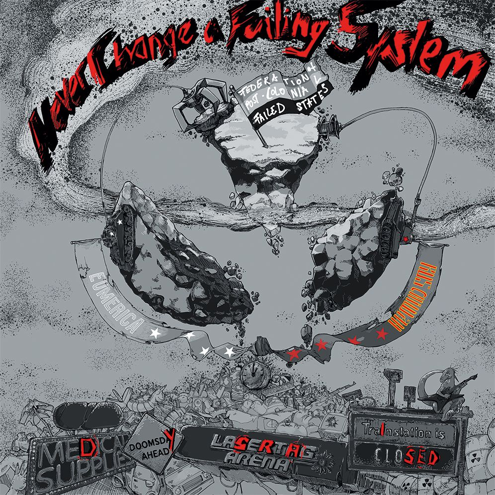

Review
DYSRAISED - Never Change a Failing System

Wieder so eine Band, von der ich noch nie gehört habe.
Download-Link.
Na gut.
Ich wollte sowieso gerade kochen.
Play.
...
Ähm.
Echt jetzt?
Noch mal schnell auf den Bandnamen geschaut.
Das Intro hätte auch von Blind Guardian oder Helloween stammen können.
Zum Glück war dieser Gedanke nach ungefähr 14 Sekunden wieder verschwunden.
Dann ging "ASSthetics" los.
Und ich ließ erst einmal den Pfannenwender fallen.
Dieser verdammte Moment, in dem man merkt, dass man viel zu viel Zeit in den 90ern verbracht hat und immer noch auf Melodic Hardcore und Skatepunk konditioniert ist.
Also Anlage in der Küche lauter.
Pfannentemperatur runter.
Jetzt wird zugehört.
Blöder Plan.
Denn spätestens bei Track 6 - "No Shit, Sherlock?!" fiel mir auf, dass ich die fünf Songs davor angeblich gar nicht richtig gehört hatte.
*Hust.*
Natürlich nicht.
Ich habe sie selbstverständlich ganz aufmerksam analysiert.
Ganz bestimmt.
Die Pfanne hatte ich allerdings wohl doch nicht weit genug heruntergedreht.
Egal.
Essen schmeckt mit Röstaromen ohnehin besser.
Und wenn wir schon bei Röstaromen sind:
Genau so klingt DYSRAISED.
Nicht verbrannt.
Nicht roh.
Sondern genau an dieser Stelle, an der etwas Ecken und Kanten bekommt.
Mich hat das Album immer wieder an Unwritten Law, Squirtgun und stellenweise sogar an NOFX erinnert.
Nein.
Ich habe auch keine Ahnung, was Röstaromen mit NOFX zu tun haben.
Ich rede hier schließlich über Musik und nicht über Bratkartoffeln.
Wer auf Melodic Hardcore, Skatepunk oder wie diese ganze herrliche Schublade heute gerade heißt steht, dürfte hier ziemlich glücklich werden.
Das klingt angenehm nach Neunzigern.
Aber eben nicht wie eine Kopie.
Sondern wie eine deutsche Band, die genau weiß, warum dieser Sound damals so viele Leute auf Skateboards gebracht hat.
Wäre es draußen nicht so unfassbar heiß, würde ich mir das Album jetzt auf Kassette überspielen, den Walkman einpacken und irgendwo mit dem Skateboard herumbrettern.
Wenn ich noch einen Walkman hätte.
Wenn ich noch Skateboard fahren könnte.
Und wenn ich inzwischen nicht in einem Alter wäre, in dem man nach einem Sturz erst einmal liegen bleibt und über seine Lebensentscheidungen nachdenkt.
Bleibt eigentlich nur noch ein Wunsch:
DYSRAISED irgendwann zusammen mit Angry Youth Elite live sehen.
Das könnte ein ziemlich großartiger Abend werden.
Und falls dabei ein paar neue Skatepunk-Kinder entstehen...
Bitte nicht mir die Schuld geben.